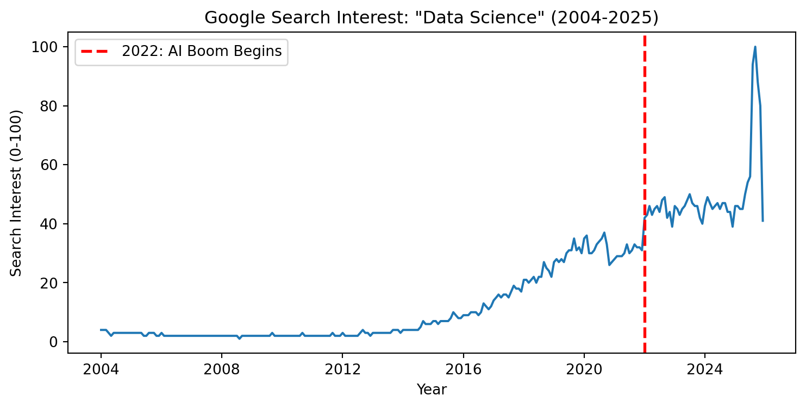

Me and my mother celebrated my 16th birthday in The US, a few days after I landed in The States.
My first meeting with Miss Tiffany Elliot (my highschool academic advisor.).
If there was one thing I was certain about the moment I decided to convince my dad to let me go to the US alone at 15, it was that I wasn’t certain at all. Despite my father’s strong opposition to my dream, I managed to convince him to let me go. I told him, “I only live once. If I don’t get to pursue this dream in this life, then in which life can I?”
I had zero clue why I wanted to do this, but there was an urge in me to do it: the feeling of doing something that excites me every morning and wears me out by bedtime. I loved the game, I loved competing, and I loved the challenge ahead of me. I looked up to guys on the PGA Tour, and my only thought was, “I want to live the life they live.”
I didn’t care about the odds of becoming one of the top 100 guys out of 8 billion in this world. Well, that statistic isn’t quite right. To find \(P(\text{being top 100}) = 100/n\), where \(n\) is the number of guys who tried. The odds were slim and pretty much against me. Most of my friends started as soon as they could walk. At the age of 14, I was considered late. More importantly, I knew I was not at the level of my friends, but I knew I wanted to beat them, and that’s all I cared about as a kid. I took every tournament personally; I wanted to beat everyone, and I wanted to beat the version of myself from yesterday. That was it, enough to let a 15 year old leave home to start a life in a new country.
And just like my dad said it wasn’t easy…
A snapshot of me in a tournment.
This used to be my office!
I was warned by my dad a thousand times that this journey wasn’t going to be easy. Well, I used to think, “No shit, Sherlock…” but he was right, and I was right too. It wasn’t easy, but the thing we both didn’t get right was just how hard it would be.
Let me help you imagine my day-to-day routine. From Monday to Friday, it was repetitive:
4:30 AM: Wake up and get ready.
5:00 AM – 6:00 AM: In the gym, getting yelled at by the trainer.
6:00 AM – 7:30 AM: Go home, get ready for school, and eat breakfast.
8:00 AM – 1:00 PM: At school studying.
1:00 PM – 1:30 PM: Grab a quick bite for lunch.
2:00 PM – 7:00 PM: Golf training.
7:00 PM – 10:00 PM: School work and wind down.
You may think now, Saturday and Sunday must be fun, right? Well, I would say it was tiring but fun at the same time. For half the weekends in a year, I played 18 holes carrying my 20-kilo golf bag in 35-degree Celsius weather. FYI, on average, I walked 15,000 to 20,000+ steps a day on the course. I repeated the same thing on Sunday to compete in tournaments.
Every other weekend, I was out there practicing. Every weekend, I had intrusive thoughts: I wish I could just sleep in and take a rest day. But I guess what kept me going was the love for the game and, more importantly, my coach’s harsh motivation: “If you’re not out there, there is some kid out there hitting 1,000 balls more than you. They are getting better than you, and you’re competing against them next weekend.” And that’s what kept me going.
I was struggling at first but then I got better…
In 2019, my scoring average was 83.44. That’s, on average, 11.44 shots over par (you want this to be as low as possible). If someone tells you they are playing competitively and they still shoot double digits over par… Well, that person is not good. And yep, that was me!
My scoring average was 83.44 in 2019.
Then, 2020 was the year I was at my peak. I got my scoring average down by three strokes to 80.85 (that is roughly 8 shots over par). I started to play more competitively and I had a feeling like I could go out there and win this thing.
My scoring average was 80.85 in 2020.
But you guessed it right: COVID-19 hit. All of my tournaments got cancelled. My journey didn’t quite end there; I stayed and practiced for a bit more, but then I got called home by my father on the first rescue flight that flew 36 hours straight from the United States back home (Well we made a stop at Alaska).” Do you ever wonder what quarantine is like in Vietnam? Here’s a few snapshots I have left.
The longest flight of my life, 36 hours.
This is a millitary guest house for quarantine.
I was wondering what comes next after this…
And well you may ask- why don’t I continue? Unfortunately, my mother was diagnosed with cancer and I wanted to spend time studying closer to her during her last few years. She passed away in 2021 and fought a hard battle with cancer for 13 years. She was a true warrior and was my biggest motivation for whatever that I am doing today.
And just like that, I stayed in Vietnam to take care of my mother and studied Finance and Economics at RMIT university of Vietnam. Well I didn’t quite graduate.. Economics and Finance were fun and all but something wasn’t right… It doesn’t challenge me. There’s no way I came from hustling with golf and then sitting at a table putting the right money into the right account and giving some pseudo explanations about a performance of a company that I have never worked in. I figured if I was sitting at a desk, I might as well be putting my brain into full work mode, not just doing something repetitively. And there was the AI boom, the year Chat-GPT came out, the word “Data Science” appeared more and more. Here is an illustration of the Google Search Keywords Analytics
Code
import pandas as pdimport matplotlib.pyplot as plt# Read data (skip 3 lines to get to actual data)df = pd.read_csv("googlesearch.csv", skiprows=3, names=['Month', 'Interest'])df['Month'] = pd.to_datetime(df['Month'])# Create plotplt.figure(figsize=(9, 4))plt.plot(df['Month'], df['Interest'])plt.axvline(pd.to_datetime('2022-01-01'), color='red', linestyle='--', linewidth=2, label='2022: AI Boom Begins')plt.title('Google Search Interest: "Data Science" (2004-2025)')plt.xlabel('Year')plt.ylabel('Search Interest (0-100)')plt.legend()plt.grid(False)plt.show()

I didn’t know what this major was or at least what was inside of it but I guessed, if there’s lots of people on that boat, the boat might be heading somewhere nice so I figured I might as well jump on it. And I wanted to try Sydney out, I have heard that the weather is nice like Los Angeles and people were “friendlier” than the United States. So, here I am, a Data Science Major studying at the University of Sydney. Clearly, I was unaware and given no knowledge of the maths this was involving. I knew there were more numbers and equations involved but I figured I was good at balancing the chemistry equations and I could solve some algebra equations back in high-school so I’ll give it a shot. And the first most maths heavy unit I did at USYD was QBUS1040 (Introduction to Business Analytics). Don’t let the name fool you; while it sounds easy, we actually covered advanced topics like regularization, multi-objective least squares, and constrained optimization using Lagrange multipliers. And yes, I studied all the calculus that I have missed by playing way too much golf in Highschool with little care on my academics. And yes, if there was one thing I could go back and change about my High School years were to focus on my academics at the same time as well.
The memories that I have left…
I remember the sandwich my coach gave me at the end of every tournament before our dinner feast. I remember the laughs we shared on the course, knowing we had all played terribly and there was nothing left to do but have fun and enjoy the expensive entry fee. At least the course was nice, right? I started considering tournaments as simply cheaper green fees with better hospitality at exclusive courses, rounds that would normally cost twice as much if I weren’t playing in a junior tournament. The fun part of this journey wasn’t just the opportunity to play competitive golf; it was the friendships I made along the way. I came to the US alone at 14. I missed home, but I found brothers in Danny, Kenny, Ryan, Lubo, Mike, and Jamie. To this day, I remember the 5 AM workouts we had to do because it was the only time our trainer was available before school. We were all grumpy and, as 14-year-olds, half-asleep. The workouts happened in pure silence. I remember some of us complaining, but the only response was, “Shut up and get it done.” This wasn’t out of hate; we were all going through the same pain, and we believed being a man meant quitting the whining and working through it. Every time I heard “shut up,” it was motivation, not an insult. Nothing felt as bad as waking up at 4:30 AM to train, but nothing felt as good as completing the workout and knowing I had achieved a small win for the day.
After all, the dream wasn’t completed but the lessons it gave me were valuables to complete my other dreams.
Just like in golf, no matter how hard it is, how much you hate it, or whether you don’t know if you are going to make it or not, showing up is what you have to do. At times, I really have no clue what the professors are talking about in a lecture, but I just show up, attending every lecture I possibly can, even when I don’t understand and have to discuss it with ‘Professor GPT,’ Claude, or even Gemini (who has done a fantastic job too). Just show up, trust the process, and have patience with yourself.
Well, and why would someone reading it until here should consider giving me an opportunity at the role?
So, why should you consider giving me an opportunity? I may not be the sort of math prodigy who wins Olympiads, but I am the person who sticks around, fights to understand difficult concepts, and finds solutions. I show up every morning, even when the work is stressful or the path isn’t clear. I believe this combination of curiosity, resilience, and adaptability makes me a valuable addition to your team.